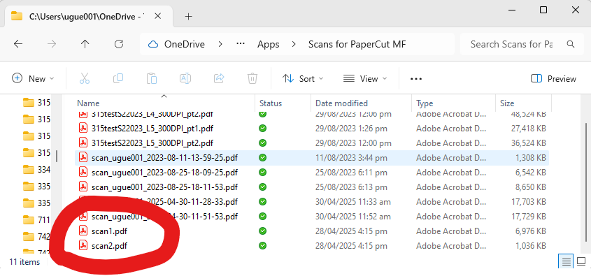
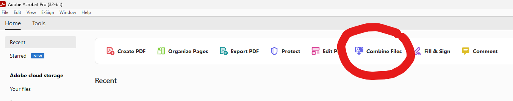
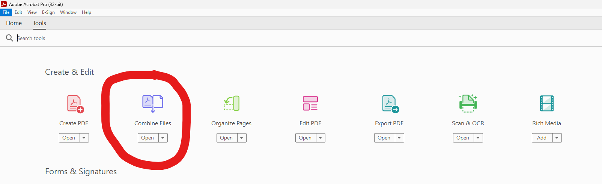
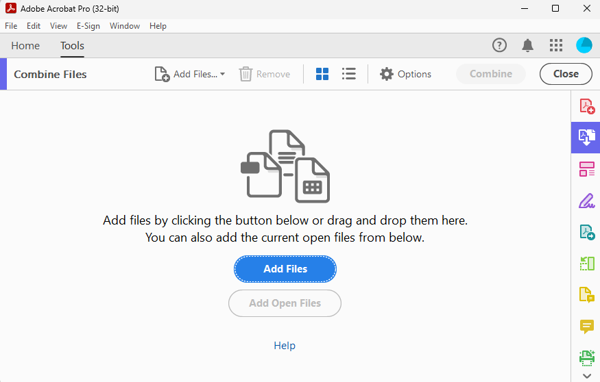
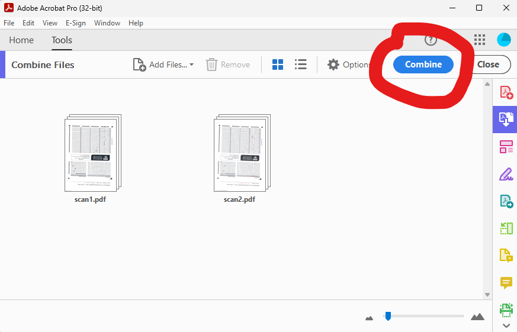
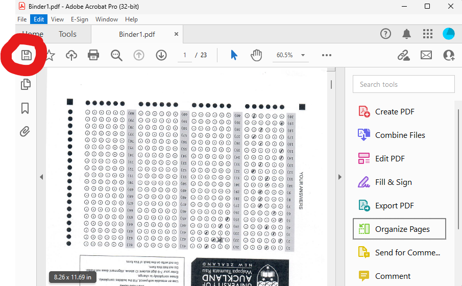

Here's what to do once you have collected the OMR sheets from the students after the test or exam.
Before you scan, it's a good idea to:
We scan on the University of Auckland's networked FollowMe printer/scanner/photocopiers, but have also tried other scanners and have yet to find one that wouldn't work with Dividni. We recommend the following settings:
On University of Auckland FollowMe printer/scanner/photocopiers, log in and select Scan. You then have the choice between scanning to e-mail, to OneDrive, to Dropbox, or to Google Drive. Any of these is fine, although we'd recommend scanning in batches of no more than 20 sheets when using e-mail. For the other destinations, you can scan in larger batches, depending on how many sheets you can fit into the automatic document feeder of the scanner without jamming them in (if in doubt, use fewer). The FollowMe scanner usually handle batches of about 30-40. The orientation of the sheets in the scanning does not matter as Dividni recognises the orientation from the position of the L-shaped marker on the sheet. But we recommend that you have all dog-eared corners point away from the automatic document feeder to avoid jams.
Scanning in batches means that you will end up with a separate PDF file for each batch. Hint: Keep the OMR sheets of the batches separate - this makes it easier to locate any missing scans later.
If you are scanning to OneDrive, Dropbox, or Google Drive, the software that places the scans there - PaperCut MF - needs your permission to do so. If you haven't already given permission or the scan's don't appear automatically, you should find an e-mail from PaperCut MF in your inbox requesting permission. Follow the instructions in the e-mail, and see your scans appear in the folder Apps\Scans for PaperCut MF soon thereafter. Once you have given permission once, you shouldn't have to give permission again for a while.
Check whether the number of pages in the PDFs add up to the total number of OMR sheets you had. If not, check each batch for sheets that may have been missed. Also check each PDF for any pages that may not have been fully scanned (the three square markers and the L-shaped marker must be fully visible). If in doubt, re-scan the affected batch.
From hereon, it's generally easier to work with larger PDF files rather than smaller ones, and combining the PDFs from our batches is the logical next step. There are several ways to do this, but if you have Adobe Acrobat (as most University of Auckland staff will), using this to combine is the easiest way.
Locate the PDF files you wish to combine on your machine, e.g., with Windows Explorer. For example, in the screenshot below, I have highlighted the files scan1.pdf and scan2.pdf that we will combine in this example:

Now open Adobe Acrobat and maximise its window. Try and locate the "Combine Files" tool - you should see it near the top of the window:

Alternatively, click on "Tools" and locate it there:

Click on the entry to open the tool, and you should see something like the following window:

As the window suggests, use the "Add Files" button or menu entry to add the two files from Windows Explorer - or simply drag and drop them here. It all works equally well.
You will now see the two files (drag them if you want to change the order in which they will be combined). You'll also notice that the "Combine" button on the top right is now no longer greyed out:

Click on the blue "Combine" button and let the magic happen. Acrobat now combines the two files into a "Binder" PDF file and opens it for you straight away:

Of course, you can combine any number of files - not just two. Note however that the combined size should be under 500MB, the maximum file size for the OMR Processor.
BTW: Don't worry if your OMR sheet scan appears upside down or slightly rotated as in this image. This is OK, Dividni's OMR Processor sorts this out automagically later.
Simply click on the "Save" symbol to save the binder PDF under a name of your choice in a place where you can find it again for further processing. Do a final check to ensure the number of pages in the combined PDF corresponds to the number of OMR sheets you collected.
This happens in the OMR Processor.
Before heading to the OMR Processor, have the combined PDF scan file from the previous step ready, as well as the IDs.txt file that maps student ID numbers to names. If you haven't got the latter at hand yet, here are instructions on how to obtain it.
The OMR processing happens in two steps:
In this first step, you upload the PDF with the scanned OMR sheets. The Dividni OMR Processor will now try and extract the student ID numbers, version numbers, and student answers from each OMR sheet. This can take a few minutes for large classes - a rough rule of thumb for tests with 20 questions is a minute or two per 100 students.
The outcome of this first step will not be perfect:
We address these issues in a second step.
After the first step, the Dividni OMR Processor allows you to upload a file with student IDs and names. Use the IDs.txt file here. While this is optional (for cases where you do not have a class list available), it is very strongly recommended because it allows the student IDs from the OMR sheets to be verified, and any problems to be sorted within the OMR Processor environment. The explanations below assume that you will have uploaded the file.
One you have uploaded the file, the OMR Processor will show you an image of the scan of either:
The OMR Processor regards an OMR sheet as problem-free if:
It will flag a problem if any of the following occur
ID problems get flagged by means of a warning triangle and a message in red. Question-related issues get flagged with a message that states the number of questions answered vs. expectation, a list of "problem questions" at the bottom, and a purple circle around each affected question number. Problem answers have a red frame around them.
Once all red and purple has disappeared from a sheet / page, use the ">>" button to advance to the next problematic OMR sheet, or the ">" button to advance to the next OMR sheet. Likewise, "<" and ""<<" will let you move to the last / last problematic sheet.
If the ">>" button does not show, head for the blue button at the top and download and save the processed scan result.